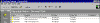

| ||||
The FrontPage Explorer manages hyperlinks automatically when you move or rename files and folders. It also provides commands for testing and repairing hyperlinks in your FrontPage-based Web site.
The Hyperlink Status view in the FrontPage Explorer lists the status of broken internal and all external hyperlinks in the current FrontPage-based Web site. When you choose the Hyperlink Status view, the status of internal hyperlinks is available at once, but external hyperlinks are not immediately verified because they point to pages outside of your FrontPage-based Web site and, depending on network traffic, can take a long time to verify.

Click image to enlargeFigure 1. The Hyperlink Status view
Broken hyperlinks are shown with a red "Broken" status and unverified hyperlinks are shown with a yellow "Unknown" status. When an unverified or broken hyperlink has been verified or repaired, it is displayed in the list with a green "OK" status (if Show All Hyperlinks is selected from the View menu).
Note: If you do not have access to the World Wide Web while taking the FrontPage tutorial, you should skip the following exercise. Verifying external hyperlinks requires an active connection to the Internet.
The Verify Hyperlinks dialog box is displayed. In this dialog box, you can specify whether FrontPage should check all hyperlinks or selected hyperlinks only.
The FrontPage Explorer's status bar displays the current hyperlink being verified. External hyperlinks may temporarily change to a yellow "Verifying . . .;" status to indicate that the hyperlink is being verified.
When FrontPage has finished checking hyperlinks, the FrontPage Explorer's status bar will display the total number of broken hyperlinks.
Did you find this material useful? Gripes? Compliments? Suggestions for other articles? Write us!
© 1999 Microsoft Corporation. All rights reserved. Terms of use.